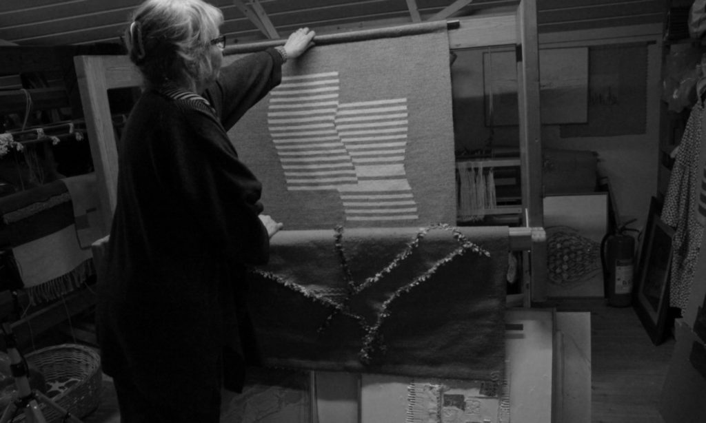
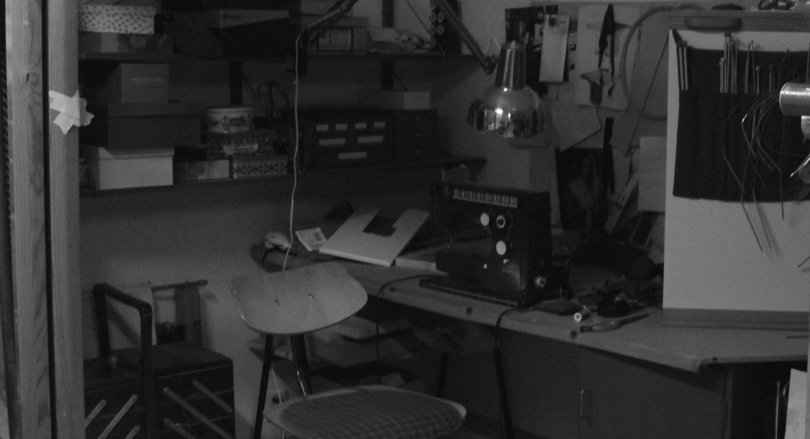
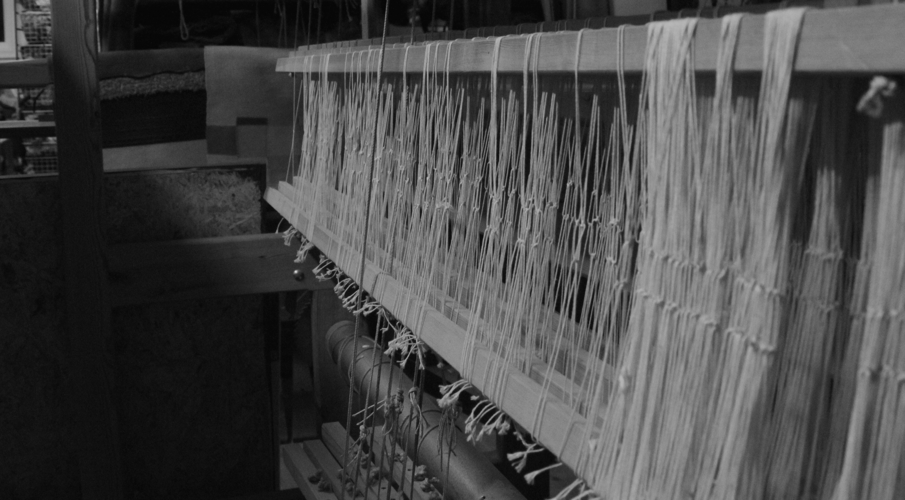

Solveig I. Moberg
Kunstvev & Collager

Litt om meg
Solveig I. Moberg
Opp igjennom årene har jeg vært syerske hos Lillemor Nerdrum, og arbeidet flere år hos buntmaker E. Nilsen. Etter det var jeg formingslærer i flere år, før jeg arbeidet mer og mer som kunstner med vevnadene mine. Først i 2009 begynte jeg med collager.
Utdannelse fra Statens Kvinnelige Industriskole, nå Statens Lærerskole i Forming Oslo med søm, vev, prydsøm i 1967.
Kunstvev & collager
Vevteppene mine har lin renning og ull innslag, ellers eksperimenterer jeg med både tau av hamp og syntetisk tråd og blanke stoffer. Collagene er som regel laget på plate med akrylmaling , folie,papp, papir og stoffer. Prisene ligger på mellom 1800-8000 kr for vevnadene og 1000-4500 kr for collagene ferdig innrammet.

